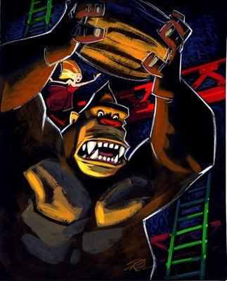

by Robert Abbott
|
Have you seen video games lately? The graphics are great, the music is impressive, and they are so realistic you feel you are almost watching a movie. But what happens in them? Well, most of the time you have a view from behind the hero. You follow the hero as he travels down one passageway, looks around a corner, travels down another passageway, then shoots at something. And that’s it! That’s all that happens! Over and over again! Of course, it’s very realistically drawn and you feel like you are almost there. But so what! In another type of game you are again behind the hero, who is on a skateboard or in a cart, and he goes around a course. Then he goes around the course again. And again. There are other characters going around the course and the hero is racing them. Wow, that’s really exciting—if you’re five years old. Those two formats comprise the majority of the games. There are a few games, mostly available on personal computers, that follow other formats. One or two of these games show some promise, but I won’t address them in this diatribe. What’s really depressing about video games is they used to be pretty good. I hope there are those of you who remember the games of the 1970s and 1980s—games like Berserk, Q-Bert, Pac Man, Donkey Kong, Tetris, and the brilliant Chip’s Challenge. (Chip’s Challenge is now played as a computer game, but it started life on the hand-held Atari Lynx.) The games usually had a top-down view that let you see the entire game board. The graphics were minimal. If the player was represented by a character on the board, that character was usually just a stick figure or a small round cartoon face. Most of these games relied on fast response, but the players could actually apply reasoning. Compared to today’s games, the 70s and 80s seem like a golden age of video games. So—what went wrong? How did the clever video games of this golden age degrade into the mind numbing, incredibly stupid games of today? I can see four causes, and I’ll be happy to explain them here. Cause 1: Today’s players are incredibly stupid In the 70s and 80s, people of all ages played video games. Today they are played almost exclusively by teen-age boys or by young children. I shouldn’t knock teen-age boys, because they have always been the ones who are serious about all forms of games. So I’ll just knock the teen-age boys who are engrossed in the “twitch” games (so called because they require fast responses and the players do a lot of twitching). Game companies will not publish a game unless it appeals to this core audience. Every now and then a spokesman for a game company will get pious and say, “We want to be inclusive. We want to create games that will also appeal to teen-age girls.” They never consider that girls are just not dumb enough for their games. Cause 2: Video game critics are incredibly stupid There are many magazines devoted to video games, but the magazines are as dumb as the games they write about. About all that is in these magazines is tips on how to win the games. They give “cheats” on how to move ahead to different levels of the games without actually having to play all the levels. The game programmers actually embed code for these “cheats” so the game magazines will write about their games. If you’re unfortunate enough to have Tech TV on your cable system, you’ve probably seen their game critics. They are a couple of excited post-teen-agers who tell you how great the games are. Their reviews usually contain this sentence: “The action is so smooth, the graphics are so compelling, the music is so over-powering, that you feel you are really there shooting at the monsters.” They also frequently tell you that the next generation of whatever game system “will be so technologically advanced, will be so realistic, that it will knock your socks off.” These critics and, unfortunately, most video game players have a basic misunderstanding about the nature of games. They believe that the purpose of a game is to imitate something in life. They think the more realism the game has, the closer it will come to imitating life, and the better the game will be. They are simply wrong about this. We don’t play games as a substitute for reality. Actually, no one knows why we do play games, but reality has nothing to do with it. Other forms of art besides games have been plagued by this notion that art should imitate life. The ignorant have always believed that a painting should look like something, and the more realistic a painting is, the better it is. They consider modern art to be an aberration. Fortunately there are art critics, and indeed an entire academic discipline, which has shown that painting can be more than just a representation of something. Of course, the ignorant still think a painting should just look like something. Even photography, the most realistic of the arts, has been trying to do more than just present realistic images. Let me tell you about one particularly dumb video game, because it illustrates how the notion that art should imitate life can lead you astray. This game is an illustrated chess-playing program called “Battle Chess.” Chess itself has some confusion surrounding it. It’s basically an abstract game that had a “theme” applied to it; that is, they named the pieces after characters in the medieval court. There are, however, people who say that chess was developed to teach people the art of war, that it was a sort of crude simulation game. That idea is completely wrong, as anyone who knows anything about games will tell you. However this “art of war” idea is repeated over and over. Now, if you think chess is a crude simulation game, you would naturally think that adding more realism to the game would improve it. That’s what some video game designers thought, and they came up with Battle Chess. If, say, you indicate your knight should capture a particular pawn, then your knight springs to life as a warrior on a horse and it moves over to the pawn, which is represented by a peasant. The knight then lops off the head of the peasant. Wow—that makes chess so much more realistic! Video game critics actually said this game carried out a worthwhile function: it helped introduce teen-age boys to chess (by, I guess, appealing to their innate thirst for blood). Cause 3: Video game designers are incredibly stupid Not only are they incredibly stupid, they aren’t even game designers. They are computer programmers and graphic artists. Video game companies can’t even comprehend the concept of a game inventor. To them, a game or a puzzle is of no consequence. These designers have no creativity. All they can do is take an old game or puzzle, one in public domain, or sometimes they steal a new game or puzzle. They then add jazzy graphics, music, sound effects, and program it as a video game. And they think they have done a brilliant job because they are the ones who added realism to the game. They are, of course, fervent believers in the mistaken notion that realism is the only criterion for judging a game. Cause 4: Computer technology has greatly improved since 1990 By now I have repeated my main point too many times, that point being (to repeat it once more): adding realism doesn’t always improve games. But here is a trickier concept: sometimes adding realism makes games worse. That shouldn’t be surprising because it happens frequently in other art forms. For example, in the 1920s there were silent movie comedies that had audiences laughing so hard they were pounding on their chairs and stamping their feet. Talkies arrived in 1930, and after they were perfected, no more silent comedies were made. Unfortunately, the comedies they made as talkies were never as funny as the silent comedies. In fact, to this day no one has made a movie as funny as the silent comedies. But once people saw the greater realism of talkies, no one wanted to watch a silent film (with the exception of Mel Brooks’ 1976 Silent Movie). However, by contrast, there were silent movie dramas in the 1920s that were generally pretty bad. After talkies arrived, they started to make superior movie dramas and they have continued to improve to this day. What happened to the golden age of silent comedies also happened to the golden age of video games. It was ended by advances in technology. Computers improved so fast that the game designers realized they could go beyond stick figures or small round cartoon faces. They could now draw their heroes or monsters as full three-dimensional characters. The best way to show one of these new three-dimensional monsters is with a head-on view, and the best way to show the hero is from behind. It will not do to look down on them from above, as was done in the old video games. So the top-down view was done away with. This sounds like it would be a great improvement, especially with games that involve a maze. If you’ve ever been in a real maze, you know it’s more exciting than looking down on a flat diagram of a maze. So these new games should have been superior to the old video games. But, of course, they weren’t. I think the main reason for the failure of the new video games is simply this switch from the top-down view to the 3-D view. The top-down view just gives you more information. You see where all the monsters are, you see what is travelling into your area, you see where the barriers are, and you can plan ahead. In the 3-D view, you only see what is directly ahead of you. And about all you’re given to do is shoot at what you see. And what about the maze aspects? Well, in a real maze, if you travel down a corridor then turn around a corner, you really know you have turned and now have a different orientation. And you can begin to develop a mental map of the maze in your mind. If, instead, you have a 3-D view inside a maze on a video screen, and you turn around a corner, you somehow don’t feel like you’ve turned. Some cognitive information is missing. Instead of feeling you have turned, you just see the picture of the maze pan across your screen. It is impossible to build a mental map of the maze. So, if this 3-D view is so bad, why don’t game designers just go back to the top-down view? Well, it’s for the same reason that no one would go to a silent movie today. Once you get used to the realism of the 3-D view, you think there is something missing in the simple top-down view. If a game were published that had the old top-down view, all the video game critics would say, “This is utterly lacking in realism, so it can’t be any good.” © 2001 Robert Abbott
To the first page of many fascinating responses to this article
Postscript, August 25, 2005:
But please don’t write more letters about this essay. During 2002 and 2003, the essay became widely known and I was inundated with letters—mostly hate mail. It got so bad that I had to take it off my site. I figured it didn’t matter, because I obviously wasn’t going to change anything in the world of video games (though a few people wrote that I had changed their minds). Recently, I thought it would be okay to bring the essay back as long as I kept it buried on my site. That way, only those interested in serious games will see it.
Notes (from 2001):
There is a lot of information on the Web about the video games of the 1970s and 1980s. Here is an interesting article about Berserk, and here is one of the many sites about Chip’s Challenge. I just learned that there are many people who are passionate about the arcade and home video games of the 1970s and 1980s; they buy and sell old systems like the Atari2600 and ColecoVision; they provide emulators so you can play the old games on your PC; they have a yearly Classic Games Expo; and they even create new cartridges for the old home systems. Here is one of the web sites devoted to classic video games.
More notes (from 2001):
My essay had an inauspicious beginning. At first I was sure it would be published in a magazine, but it was rejected by two print magazines and one on-line magazine. So in August, 2001, I decided I would just post it on my site.
The essay languished without many visitors for a month or two, then it slowly began to be noticed. On February 21, 2002, Memepool.com gave it an appreciative write-up and then it was mentioned on other sites. I now was getting many visitors and many brilliant letters in response. I’ve posted about half the responses.
The letters I received are another example of the communal efforts that are possible only on the Internet. None of this would have happened if my article had only appeared in a print magazine.
Here is the notice that appeared on www.memepool.com:
|
| Thursday Feb 21, 2002 | Ever hear of the game Chess? Reviewer Greg Kasavin hates the first edition but loves the second, realtime strategy version. Reviews elsewhere have been mixed. The whole controversy reminds me how much I agree with game designer Bob Abbott's assertion that video games suck. to Games by tinfoil |
|
This also mentions a piece by Greg Kasavin. It’s hilarious. He imagines what would happen if a computer game magazine came across Chess for the first time. Naturally they would hate it. (In fact, Kasavin really is an editor for a computer game magazine.) This reminds me of something game inventor Sid Sackson told me many years ago (long before video games appeared). He said if Chess were submitted to any game manufacturer, it would be rejected. Actually, both Sid and I thought Chess was inferior to the games that he and I invented, but that’s beside the point. This item is archived on memepool’s games page and on the page devoted to the writer, tinfoil. I found out who “tinfoil” really is. Here is his web site.
Game Talk By speek I've always considered myself a "gamer". I've spent a lot of time playing games like chess, stratego, D&D, BattleTech, StarFleet, Empires in Arms, RoboRally, Civilization, Formula De, and on and on. Notice a common theme? None of these are modern computer games. Robert Abbott makes games and puzzles, and he is very clear about why modern video games suck. I mostly agree with him, though I wouldn't have been quite so vehement about it . . . Theseus and the Minotaur is a good example of Abbott's puzzles. Not a game, per se, since it's single player, but a heck of a lot of fun. There are some good games out there . . . however, my problem with these games is that they are still trying to be overly "realistic", and thus overcomplicate matters. Abbott puts his finger on the issue: a simulation does not make a good game. Quite often, the more "realistic" one tries to make a game, the more tedious and repetitive the game becomes. They also tend to lose a lot of strategic elements compared to simpler, yet better designed, games. Probably the best notice of my essay was on Google [again in 2001]. If you search on “video games,” you will, of course, retrieve a few million items, but the pointer to this essay is usually about fourth on the list. That hasn’t been an unmixed blessing for me because it attracts mostly fans of video games and they were writing me at least one angry e-mail every day. |
|
 A God in the World He Once Knew by Starchie Spudnoggen |
Another postscript, September 14, 2008: Recently there has been a revival of interest in classic video and arcade games. A prime example of this renewed interest is the 2007 documentary The King of Kong: a Fistful of Quarters One activity is a yearly art show in Los Angeles called I am 8 Bit, which has paintings inspired by classic video games. The painting at the left, an interpretation of Donkey Kong, is from one of these shows. And here is a contrasting interpretation of Donkey Kong. Another activity is music. There are bands that use sounds from old games, created on synthesizers and on home video game controllers. One example is Micro Boogie, a tune I can’t get out of my head. It is by 8 bit weapon and can be found in this collection. Another example is Fantastic Farben, which is a fugue. It’s by Hellphish and it is here. | |
|
| ||